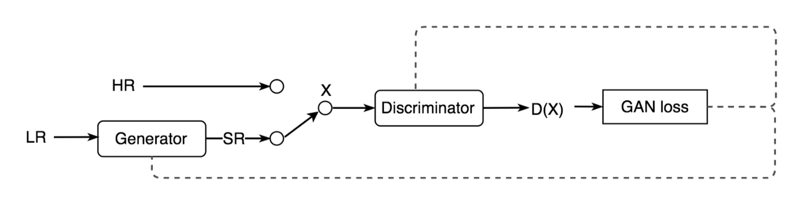
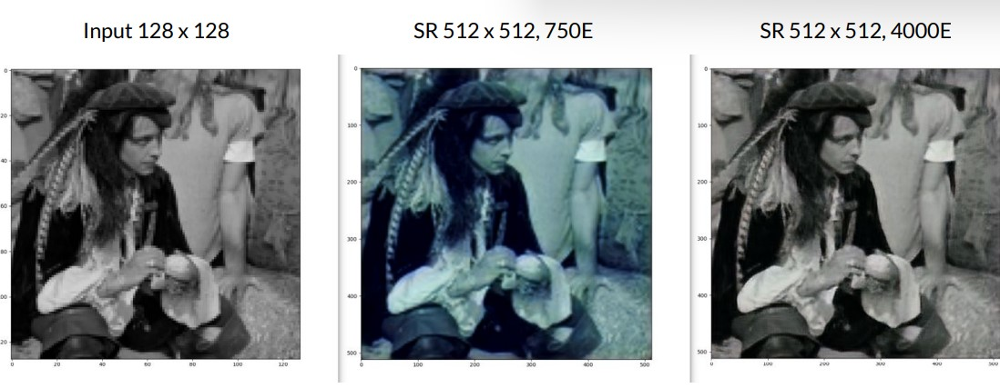

General Adverserial Networks
Super Resolution GAN
About the Project
Shifting and Image from High to Low Resolution istermed as Super resolution. Earlier, it was done using bicubic-interpolation, CNNs, and then GANs wereimplemented; which caused an increase in the quality of theimage produced. GANs consist of two models; a generatorwhich produces images from random noise when trained;and a discriminator which determines whether the generated image is fake or not. The task of upscaling lies with theCNN RESnet. The objective is achieved when there is a 0.5 probability for discriminating between the generated and the original image. The GAN is a type supervised learning algorithm which is trained to be able to successfully generate unseen upscaled images. In our SRGAN model, weused a VGG19 network to assist in the discriminator's loss score. The VGG19 is a network developed by a group at OXFORD where they pretrained an image classification network on the ImageNet dataset. Using the VGG19 network helps to decrease the time it takes to train the discriminator network as it has help from a pre-trained model.
The use of computer vision, and CNNs has skyrocketed over the past few decades, especially for image classification. For this project, I demonstrated the use of CNNs and GAN for upscaling images from low resolution to High resolution, the upscaling can be used in many applications such as for upscaling old footage, medical footage, satellite imaging

Skills Involved
- OpenCV
- Computer Vision
- GAN
- keras and pytorch
- Image processing
- Neural Networks
- Camera stabilization techniques
Procedure
The images were extracted from the publicly available dataset div2k which has 25 thousand images for training, the images were of random size, so first steps were to preprocess the images and convert them in an uniform size of 64*64 and the create a ImageDatasetGenerator using keras library, the architecture of the network was deep for a GAN network because the network had to learn low level features to generate features while upsacling, the architecture consisted of resnets with skip connection to avoid vanishing gradient
The GAN network mostly comprised of convolution layers, batch normalization and parameterized ReLU (PRelU). The generator also implements skip connections similar to ResNet. The convolution layer with “k3n64s1” stands for 3x3 kernel filters outputting 64 channels with stride 1.
- 16 residual blocks in generator network
- output size of 256*256
- learning rate - 0.0001
- epochs 4000
The results were achieved using the following hardware specs:24 Core CPU, 256GB RAM, Nvidia 3080 GPU. Using thetwo hyperparameters setups mentioned in the previoussection we were able to produce the following two images.The original low resolution input image is shown on thright. This image is a 128 x 128 pixel image with a gaussianblur applied. On the right we have our generated imagesfrom our two models. The first generated image shown inthe middle is a 512 x 512 pixel image generated by ourmodel that ran with 750 epochs and batch size of 8. The second generated image shown on the bottom far right, usedthe hyperparameters of 4000 epochs with a batch size of 1
While the results relied mostly on objective reasoning, webelieve that both of our implementations were able toaccomplish our goal successfully. We were able to produceimages that had 4 times the pixel count as the input imagewhile also restoring resolution to be comparable to theoriginal image. Some of the observations we notice with thefirst generated image in the middle is that the model wasable to smooth out edges and make them sharper as seen inthe shoulder, nose and hat regions. One thing this modelmissed was replicating the same color space. As seen in the picture, the color appears dull with less contrast. Our secondmodel on the bottom right performed better on this image
Learn More
This was my final project for EECE 5644: Pattern Recognition and Machine Learning at Northeastern. The original paper for the SRGAN implementation is The README should contain all necessary information for SRGAN in pytorch by th author